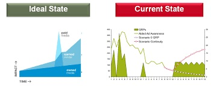
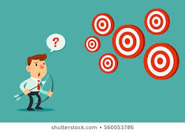

게임에는 목표라는 게 있고, 플레이어는 그 목표를 달성해 가는 과정에서 재미를 느낀다. 그렇다면 도대체 여기서 말하는 "목표"란 무엇일까?
목표의 정의를 이해하기 위해서는 우선 그것을 발생시키는 조건이 무엇인지를 알아야 한다. 목표란, 이상적이지 못한 상태의 무언가를 이상적인 상태로 변화 시키려는 의지를 일컫는다.
(이미지 출처: Marketing Interactive: https://www.marketing-interactive.com/what-ideal-content-marketing-be-like/)
예를 들자면 축구공은 항상 두 가지의 위치값들을 가지고 있는데, 그 중 하나는 "현재의 위치"이고 나머지 하나는 "이상적인 위치"이다. 현재의 위치는 말 그대로 축구공이 현재 놓여져 있는 지점을 의미한다. 반면에 이상적인 위치는 축구공이 도달했을 때 가장 플레이어에게 많은 이익을 주는 지점, 즉 상대방 팀의 골대 안을 뜻한다. 축구가 게임인 이유는 목표라는 게 있기 때문이고, 여기에서의 목표란 축구공을 현재의 위치에서 가장 이상적인 위치(상대편 골대)로 이동 시키는 행위인 것이다.

(이미지 출처: Bloomberg: https://www.bloomberg.com/news/articles/2019-05-24/soccer-s-215-million-playoff-is-biggest-prize-in-team-sports)
물론 이는 매우 단순한 예시에 속한다. 오늘날 출시되는 대부분의 컴퓨터 게임들은 2가지 이상의 목표들을 동시에 유저에게 제시함으로써 자유로운 선택을 보장하곤 하는데, 이러한 디자인의 대표적인 예가 바로 시드 마이어의 문명(Civilization) 시리즈이다.
문명 게임 속에서 플레이어는 자신만의 문명을 성장시켜 나가다가 몇가지 종류의 승리들(문화승리, 과학승리 등등) 중 하나를 쟁취 할 수 있는데, 여기에 나오는 승리들이 바로 이 게임 속에 존재하는 "이상적인 상태들"이라고 정의 될 수 있다. 다만 축구와는 다르게 여기에는 다수의 이상적인 상태들이 존재하며, 따라서 플레이어는 동시에 존재하는 이상적인 상태들 중 하나를 택한 다음 거기에 자기 문명의 상태를 도달 시키기 위해 노력해야 한다.
(이미지 출처: ShutterStock: https://www.shutterstock.com/search/multiple+goals?sort=popular&image_type=all&safe=true&search_source=base_related_searches)
다들 알다시피, 목표라는 것의 존재 하나만이 게임 플레이를 구성하는 것은 아니다. 똑같은 목표가 있다 할지라도 그것의 의미가 플레이어에게 얼마나 투명하게 전달 되는지, 또 그 목표에 도달하기 위해 택할 수 있는 길들이 얼마나 다양하며 그것들이 어떠한 모양을 띄고 있는지 등의 문제는 목표라는 기본 뼈대를 둘러싼 심오한 디자인의 영역이기 때문이다.